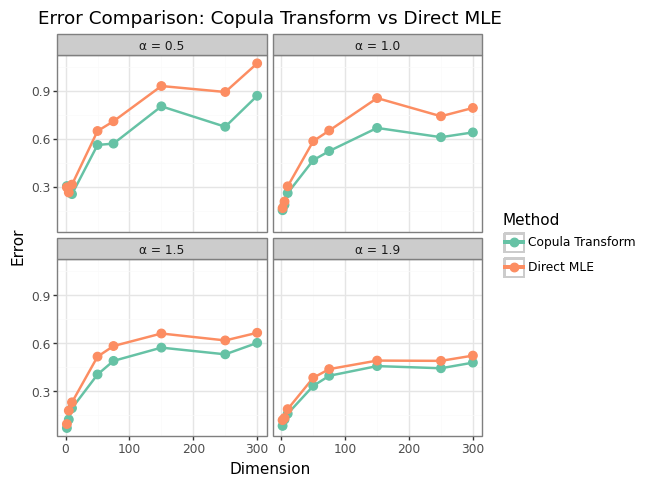
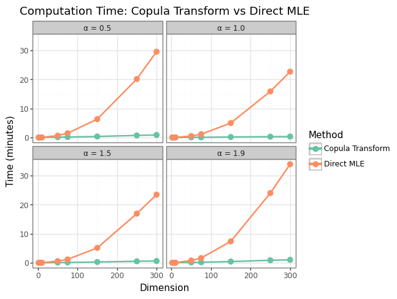

Linked Copula Transform Estimator
Orignal Idea
A copula is a multivariate CDF that encodes the dependence of a random vector. They provide a way to uncouple the distribution of the marginals from the dependence structure. Because the copulae of X and G in our problem formulation are both parameterized by \(\textbf R\), the correlation matrix that corresponds to \(\Sigma\), the covariance matrix of G/dispersion matrix of X, the MLE of this parameter from the copula distribution itself may be more easily computed than that of the stable vector. (Note: This is probably not true)
I realized that we don’t actually need to calculate the MLE for the copula – since we have the estimated marginals of the stable vector X, we can “push forward” from our empirical copula to Gaussian marginals, since their parameters are now fully specified (the standard deviation of any marginal \(i\) is \(\sigma_i = \sqrt 2 \gamma_i\), where \(\gamma_i\) is the corresponding stable scale). From there, we can calculate the sample covariance matrix of this final distribution to get our MLE of \(\Sigma\).
Clearly, this doesn’t work in both directions. If \(\Sigma = I_d\), then the multivariate Gaussian has independent marginals, and an independence copula which has uniform (flat) density. Since an elliptical stable distribution can’t have independent components, the resulting stable vector will be “star shaped”, not spherical.
Putting a stable copula on Gaussian marginals, the resulting distribution no longer has an elliptical dependence structure due to the higher tail dependence imposed by the stable copula. Even so, this new distribution shares the covariance matrix of \(G\), and is an approximate-MLE method in the sense that the new (stable copula + Gaussian marginals) distribution is approximately multivariate Gaussian, deviating more as \(\alpha \rightarrow 0\) deforms the level curves further from an ellipse. (Proofs of these facts below)
Procedure
The procedure for what I’m calling the Linked Copula Transform Estimator is as follows. The marginal distributions of our \(X\) and \(G\) vectors are linked in the sense that knowing the parameters of \(X\) fully specifies the Gaussian marginals: the scale paramter is related by \(\sigma = \sqrt 2 \gamma\), and the location parameter is shared.
The copula of \(X\) is a d-dimensional CDF on \([0,1]^d\) with uniform marginals that captures all of the dependence (but not the scale) between \(X\) and \(G\). The random vector
\((U_1, \dots, U_d) = (F_{X_1}(x_1), \dots, F_{X_d}(x_d))\)
converts realizations \(x\) to a sample from the copula of \(F_{\textbf X}\).
In the case of elliptically symmetric stable distributions (including the Gaussian), the copula encodes (and is parameterized by) the shape of the correlation matrix defined by \((\sqrt{\text{diag}(\Sigma)})^{-1}\Sigma(\sqrt{\text{diag}(\Sigma)})^{-1}\). Since \(X\) has a stable copula, it encodes the same elliptical shape as the Gaussian copula of G. The procedure to estiamte this covariance matrix is as follows:
- Estimate each marginal distribution via numerical univarite MLE. This is quick and accurate and can be made even faster through paralellization.
- Transform each observation \(X_i\) into a uniform vector \(U_i\) drawn from the copula distribution of \(X\) by pushing it through its CDF (which is again available numerically)
- Transform each observation \(U_i\) into \(\tilde G_i\) by pushing each marginal through the appropriately scaled inverse Gaussian CDF/erf: \(\tilde G_{ij} = 2\gamma_j\text{erf}^{-1}(2*U_{ij}-1)\).
- The resulting data matrix \(\tilde G\) now has Gaussian marginals corresponding to those of \(X\), with a the empirical copula of \(X\). This distribution is approximately multivariate normal and \(\Sigma\) can now be estimated via MLE in closed form as the sample covariance matrix.
To summarize in one step:
\(\hat \Sigma = \frac{1}{n-1}\sum_{i=1}^n \tilde G_i^T\tilde G_i\).
Where \(\tilde G_j = \sqrt 2 \gamma_j \Phi^{-1}(\hat F_{X_{j}}(X_{j}))\), \(j = 1, \dots, d\) is the \(j\)-th column of the approximately-Gaussian sample matrix \(\tilde G\), with:
- \(\hat F_{X_{j}}\) the \(\alpha\)-stable distribution function of marginal \(j\) with parameters determined via direct MLE,
- \(\Phi^{-1}\) the inverse standard normal CDF,
- \(\gamma_j\) the scale parameter of \(\hat F_{X_{j}}\),
- and \(\tilde G_j\) denoting the \(j\)-th column of the approximately-Gaussian sample matrix \(\tilde G\).
(Note that \(\tilde G\) is mean zero by construction.)
Some Practical Results
I tested the LCTE across the following paramters:
n_samples = [100, 200, 500, 1000, 2500, 5000]
dimensions = [2, 5, 10, 50, 75, 150, 250, 300]
alphas = [0.5, 1.0, 1.5, 1.9] The LTCE was benchmarked against direct numerical MLE implemented in the stable R package via a python wrapper. I believe that this implementation of stable MLE is the current state of the art. I measured normalized error - \(||\hat \Sigma - \Sigma||/||\Sigma||\) - for both the LTCE and the direct MLE, against both the true covariance matrix of \(G\) as well as the sample covariance matrix calculated on the “latent” G, which is stored as part of the test class. This test was time-consuming because of the extremely slow estimation of the direct MLE approach in high dimensions. To save time, I only performed a single estimate at each unique set of parameters, but reporting a statistic of many such estimates seems worthwhile. Since there doesn’t seem to be a dramatic difference across the choice of n_samples, I averaged these results in the plots below.
Looking at estimator performance, the LTCE seems to reliably outperform the direct MLE by approximately 10% - 20%.

Some likely reasons for this performance are below.
Even more significant are the computational advantages of the LTCE. Because costly numerical integration only happens in the univariate marginals, it’s computationally inexpensive and scales linearly with the dimension. It’s clear that this approach dramatically outperforms direct MLE for dimensions larger than about 5:

Why This Works
The speed improvements are obvious, but I think the LTCE achieves lower estimator error because even though the tail dependence results in a non-elliptical dependence structure (e.g. it’s a deformed elliptical, similar to the t-copula case), \(\tilde G\) and \(G\) share a covariance matrix (proof below). Thus, the sample covariance matrix of \(\tilde G\) is an unbiased estimator of \(\Sigma\).
Better yet, in finite samples, this estimator is more efficient than the stable MLE due to the simple fact that the variance of the stable MLE is only guaranteed to be asymptotically finite, whereas the Linked Copula Transform Estimator has finite variance for any \(n\), since the transformation via the stable CDF induces finite support to the sample, and the transform back to Gaussian random variables doesn’t violate this. As a consequence, the LCTE has finite variance even if the marginal parameter estimates are misspecified.
Moreover, since the stable copula is empirical rather than parameteric, relatively smaller samples are unlikely to see extreme events under which the deforemations of the elliptical dependence structure are worst. In other words, the transformed sample is likely to be much more elliptical in shape than it appears analytically (e.g. via the Jacobian below), resulting in better estimates.
Thinking about what’s actually going on using the Jacobian of the transformation in 2 dimensions:
\[ J = \begin{bmatrix} \gamma_1\frac{f_{X_1}(X_1)}{\phi(\Phi^{-1}(F_{X_1}(X_1)))} & 0 \\[2ex] 0 & \gamma_2\frac{f_{X_2}(X_2)}{\phi(\Phi^{-1}(F_{X_2}(X_2)))} \end{bmatrix} \]
Clearly, we have a nonlinear transformation happening in the principal axes, so shape is only maintained if the Jacobian is a multiple of the identity matrix. (I think) this can only happen when we start with a Gaussian… but obviously, the Jacobian is small when \(\alpha\) is near 2. One consequence of this is that we’re closer to an elliptical dependence structure (and thus \(\tilde G\) is closer to a multivariate normal) when \(\alpha\) is close to 2. As \(\alpha \rightarrow 2\) I believe LCTE converges to the MLE for \(\Sigma\).
Also, note that our new dependence structure maintains its symmetry about the principal axes, since it’s clear that \(J(X) = J(-X)\). Actually, the Jacobian is completely invariant to the sign of any component, preserving radial symmetry of the distribution despite the non-elliptical deformation.
Some More Formal Results
Lemma: The stable copula applied to any (fixed) stable marginals with \(\alpha_1 \neq \alpha_2\) cannot be ellptically symmetric.
Proof: This is immediate from the Jacobian of the transformation. Since J is diagonal, it acts on the principal axes, but these are fixed by the marginal distribution parameters. Elliptical symmetry can only be maintained then if \(J(X) = I_d\) for any \(X\). Clearly, this only happens if the two marginals share the same distribution up to scale and translation.
Lemma: \(G\) and \(\tilde G\) share the same covariance matrix \(\Sigma\), the dispersion matrix of the stable vector \(X\).
Proof: The covariance \(\mathbb E [\tilde G \tilde G^\text{T}]\) can be looked at entry-wise. We use the fact that \(\sigma_i = \sqrt 2 \gamma_i\), for any marginal distribution \(i\). Let \(Z\) be a standard normal random variable. On the diagonal, clearly \(\mathbb E [\tilde G_j^2] = 2\gamma_j^2 \mathbb E[(\Phi^{-1}(U_j))^2]= 2\gamma_j^2 \mathbb E[Z^2] = 2\gamma_j^2 = \sigma_j^2\) by construction.
On the off diagonal, for any \(i \neq j\), we have:
\[ \begin{aligned} \mathbb E [\tilde G_i \tilde G_j] =& 2 \gamma_i \gamma_j \mathbb E [\Phi^{-1}(F_{X_i}(X_i))\Phi^{-1}(F_{X_j}(X_j))] \\ &=2 \gamma_i \gamma_j \mathbb E \bigg[\Phi^{-1}\bigg(\Phi\bigg(\frac{X_i}{\sqrt W \sigma_i}\bigg)\bigg)\Phi^{-1}\bigg(\Phi\bigg(\frac{X_j}{\sqrt W \sigma_j}\bigg)\bigg)\bigg] \\ &= 2 \gamma_i \gamma_j \mathbb E \bigg[\Phi^{-1}\bigg(\Phi\bigg(\frac{\sqrt W G_i}{\sqrt W \sigma_i}\bigg)\bigg)\Phi^{-1}\bigg(\Phi\bigg(\frac{\sqrt W G_j}{\sqrt W \sigma_j}\bigg)\bigg)\bigg] \\ &= 2 \gamma_i \gamma_j \mathbb E \bigg[\Phi^{-1}\bigg(\Phi\bigg(\frac{ G_i}{\sigma_i}\bigg)\bigg)\Phi^{-1}\bigg(\Phi\bigg(\frac{G_j}{ \sigma_j}\bigg)\bigg)\bigg] \\ &= \sigma_i \sigma_j \mathbb E \bigg[\frac{G_i G_j}{\sigma_i \sigma_j}\bigg] \\ &= \mathbb E[G_i G_j] \\ &= \sigma_{ij} \end{aligned} \]
Putting these together, we reconstruct the original covariance matrix of \(G\), and \(\mathbb E[\tilde G \tilde G^\text T] = \mathbb E[GG^\text T] = \Sigma\)
More Things
- The deformation (as measured by the Jacobian) seems related to the KL-divergence of the starting and ending marginals. We might be doing the transformation that minimizes the KL-divergence between \(X\) and \(\tilde G\) while preserving both Gaussian marginals and covariance?
- Can we build a correction to force the dependence to be elliptical (getting the actual MLE)
- Normalizing Flows could be an interesting way to make the final distribution more elliptical (and thus more efficient) by learning the transform to get from \(\tilde G \rightarrow G\).